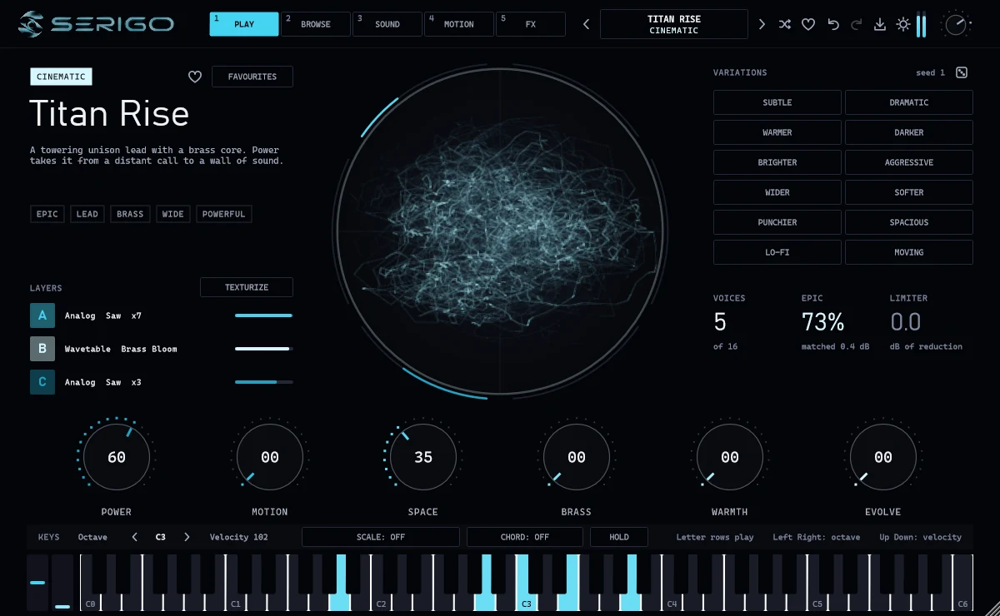
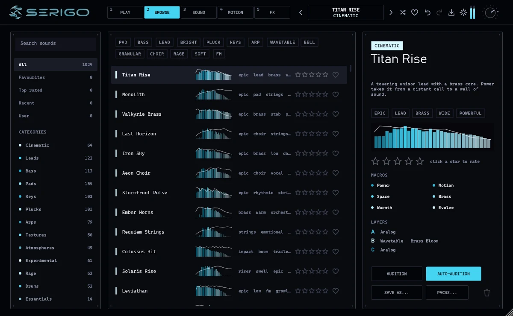
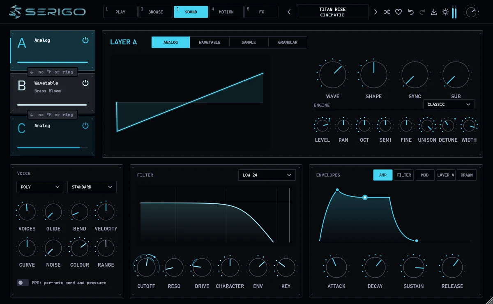
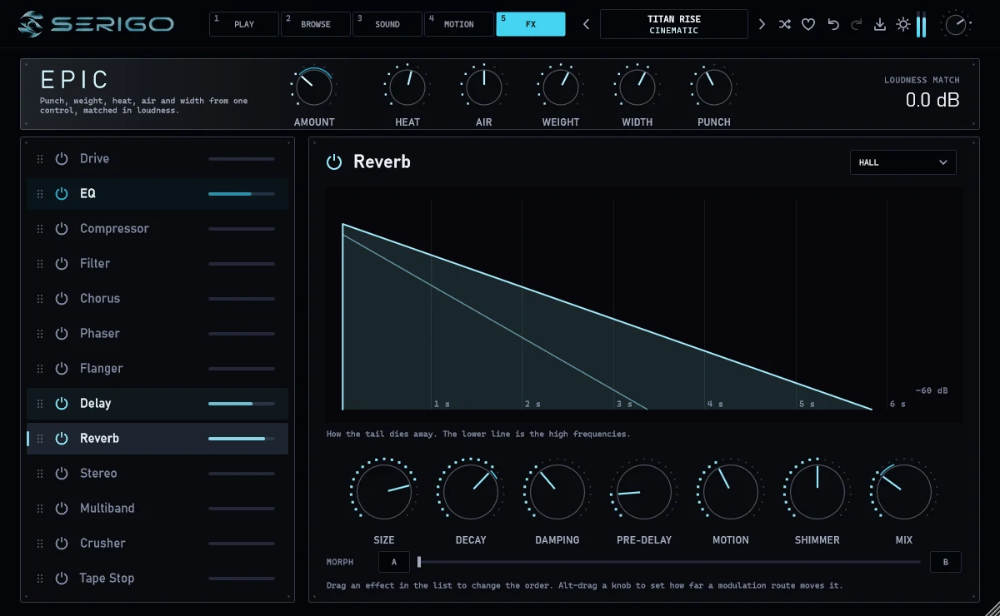

Hybrid synthesizer / VST3 / Standalone
Three layers per sound. Analog, wavetable, sample or granular, through one filter, thirteen effects and an oscilloscope worth looking at.

Every sound opens on the six knobs that matter, and every control that shapes it is one drag away.
Analog oscillators with up to seven unison voices, sixteen wavetables, eighteen sampled instruments and a granular engine. Any layer can frequency- or ring-modulate the next.
Each preset names its own six knobs, so the useful moves are always on the first page.
One click makes a warmer, darker, wider, punchier or lo-fi version of any sound. Undo brings the original back.
Drive, EQ, compressor, filter, chorus, phaser, flanger, delay, reverb, stereo, multiband, crusher and tape stop.
Granular layers can fire their grains on the beat, with four grain shapes. Put an LFO on Position for the chopped-sample sound of house records.
Drop in a sample of your own and it is blended into the current sound as a granular layer.
LFOs with drawn shapes, a drawn envelope, a step sequencer, an arpeggiator and MPE.
Two and a half octaves on two rows, on any keyboard layout, with scale lock and chord mode.
The whole instrument at default size, as it ships.



Each layer picks its own engine. They meet at a single filter and the effect chain, so the sound stays one instrument instead of three stacked ones. (Illustration of the idea, not a measurement.)
The installer lets you choose the VST3 plugin, the standalone app, or both.
Download for Windows